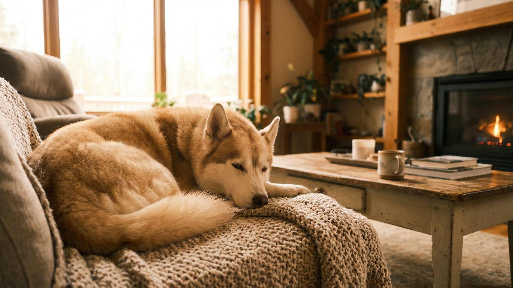

На фото он выглядит как хаски, которого уменьшили вдвое. Голубые глаза, маска на морде, стоячие уши. Люди берут кли-кая за декоративную версию популярной породы и получают совершенно другого пса. Ниже: чем аляскинский кли-кай отличается от хаски, почему это не диванная собака и кому порода действительно подходит.
🐾 У вас аляскинский кли-кай?
AnimaLife соберёт уход под породу: к каким болезням есть склонность, что проверять по возрасту, чем кормить и когда пора к врачу. Бесплатно, прямо в мессенджере.
Собрать план ухода → Собрать в MAX →
У вас iPhone? AnimaLife есть в App Store
Аляскинский кли-кай выведен в США в 1970-80-х годах: заводчик Линда Спутер из Аляски хотела получить компактного рабочего пса с внешностью хаски. Порода официально признана в 1995 году. Внешнее сходство с хаски намеренное, родство частичное (в основе аляскинский и сибирский хаски плюс американский эскимосский шпиц).
По размеру кли-кай делится на три варианта: той (до 33 см), миниатюрный (33-38 см) и стандартный (38-43 см). Хаски всегда крупнее. По характеру разница ещё заметнее: хаски общителен с незнакомцами, кли-кай к чужим насторожен и закрыт. С хозяином и семьёй ласков и привязан, с посторонними держит дистанцию.
Кли-кай создавался для работы, и мозг у него рабочий. Порода требует физической нагрузки каждый день и умственной загрузки не реже. Скучающий кли-кай переключается на деструктивное поведение: грызёт, роет, воет.
У кли-кая густая двойная шерсть. Два раза в год она линяет интенсивно, несколько недель подряд. В этот период расчёсывать придётся ежедневно. В остальное время достаточно раза в неделю.
Купать кли-кая часто не нужно: шерсть самоочищается. Раз в 6-8 недель достаточно. Уши, зубы и когти требуют регулярного осмотра. Конкретный план профилактических процедур стоит обсудить с ветеринаром на первом визите.
Кли-кай хорошо живёт у людей активных, у тех, кто готов тратить на собаку время каждый день. Он подходит для семей с детьми старшего возраста, которые умеют обращаться с животными. Первичный опыт с породами типа хаски или шпицев приветствуется.
Порода не подойдёт, если:
Материал носит информационный характер и не заменяет очную консультацию ветеринара.
🐾 Ваш питомец — аляскинский кли-кай?
Заведите профиль в AnimaLife: приложение запомнит породу, возраст и вес и будет подсказывать по уходу именно для неё. Вопросы AI-ветеринару — круглосуточно и бесплатно.
Завести профиль → Завести в MAX →
У вас iPhone? AnimaLife есть в App Store
🐾 Понравился разбор?
Подпишитесь на канал — каждый день разбираем по одному тревожному симптому у кошек и собак: что в пределах нормы, а когда пора к врачу. Подпишитесь, чтобы не пропустить разбор, который может спасти здоровье вашего питомца.